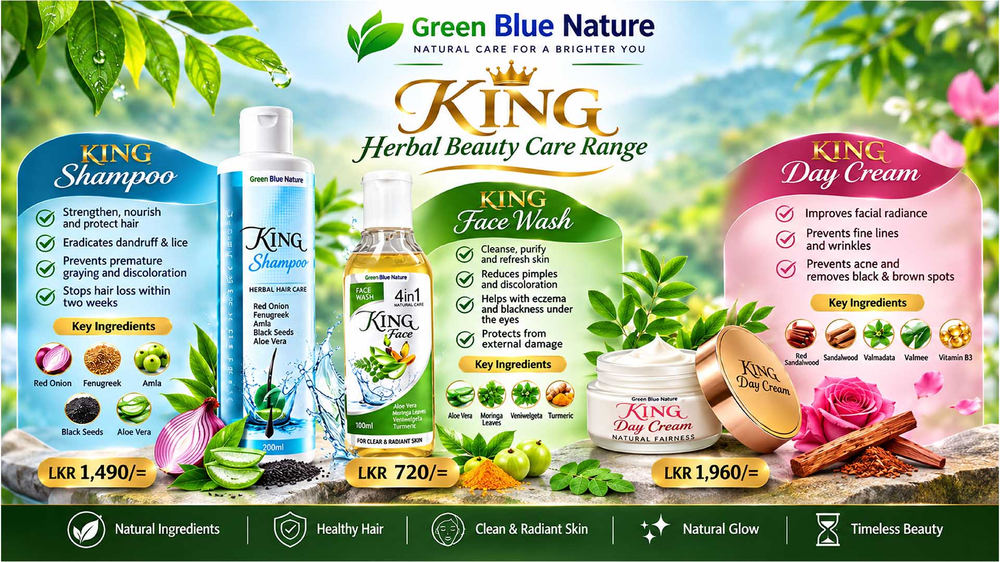

About Us
Green Blue Nature is a Sri Lankan herbal cosmetics manufacturing company.

Discover herbal beauty care inspired by Sri Lanka's rich botanical heritage.
Explore ProductsContact UsGreen Blue Nature is a Sri Lankan herbal cosmetics manufacturing company.
King Hair Oil · King Shampoo · King Face Wash · King Day Cream
Welimada, Sri Lanka
greenbluenaturesl@gmail.com
+94 71 345 5304